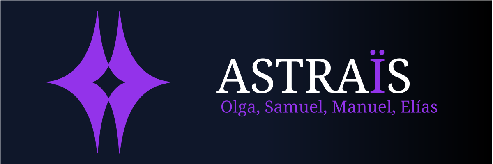

Astraïs
Convierte tu productividad en una aventura
Olga, Manuel, Samuel, Elías
Índice
- 1. Introducción
- 2. Descripción y justificación
- 3. ERP y reparto de tareas
- 4. Casos de uso
- 5. Stack tecnológico
- 6. Retos y dificultades
- 7. Ampliaciones
- 8. Conclusiones
Introducción
Astraïs
Aplicación de productividad gamificada orientada a mejorar la constancia y motivación del usuario mediante mecánicas inspiradas en videojuegos:- Gestión de tareas y hábitos
- Sistema de niveles, XP y recompensas
- Personalización y economía virtual
- Funciones sociales y colaborativas
- Minijuegos y eventos interactivos

Descripción y justificación
- Astraïs nace para resolver un problema real: la dificultad de mantener la constancia en la productividad personal. Las herramientas tradicionales de organización suelen abandonarse por falta de motivación, monotonía y ausencia de recompensas visibles.
- Este proyecto propone una solución innovadora basada en la gamificación, transformando la gestión de tareas y hábitos en una experiencia interactiva inspirada en videojuegos..
- Su valor diferencial está en convertir la productividad en algo motivador y continuo, combinando utilidad real con elementos de juego como economía virtual, logros, minijuegos y funciones sociales.
- De esta forma, Astraïs organiza tareas y crea una experiencia que fomenta la constancia, el compromiso y la mejora personal a largo plazo, haciendo que el usuario quiera volver cada día.
ERP y reparto de tareas
Esta plataforma permite planificar y coordinar el trabajo del equipo durante el desarrollo del proyecto.

Una vez definidas las tareas, se llevó a cabo su reparto entre los distintos miembros del equipo. La asignación se realizó de la forma más equitativa posible.
Casos de uso
- Video
Stack tecnológico
- Kotlin
- Jetpack Compose
- Android Studio
- MVVM + StateFlow
- React + TypeScript
- Vite
- Tailwindcss
- Ktor (Kotlin)
- Exposed
- Postgres
- Docker
Retos y dificultades
Descripción del primer paso del proceso.
Descripción del segundo paso del proceso.
Descripción del tercer paso del proceso.
Ampliaciones
Conclusión
| Columna 1 | Columna 2 | Columna 3 |
|---|---|---|
| Fila 1 - Dato A | Fila 1 - Dato B | Completado |
| Fila 2 - Dato A | Fila 2 - Dato B | En progreso |
| Fila 3 - Dato A | Fila 3 - Dato B | Pendiente |
Título de la diapositiva
Pie de foto o explicación del diagrama.
Título de la diapositiva
Título de la diapositiva
"Escribe aquí una frase destacada, una cita importante o un mensaje clave que quieras resaltar en la presentación."
— Autor o contexto de la cita
Título de la diapositiva
Título de la diapositiva
fun main() {
val mensaje = "Hola, Astraïs"
println(mensaje)
// Ejemplo de función
val resultado = sumar(5, 3)
println("Resultado: $resultado")
}
fun sumar(a: Int, b: Int): Int = a + bPie de código: explicación breve de lo que hace el snippet.
Título de la diapositiva
Explicación del fragmento de código. Puedes describir qué hace, por qué es importante o cómo encaja en la arquitectura del proyecto.
- Punto clave del código
- Otro detalle relevante
- Buena práctica aplicada
class UserRepository(
private val db: Database
) {
suspend fun findById(
id: UUID
): User? {
return db.query {
Users
.select { Users.id eq id }
.map { User(it) }
.singleOrNull()
}
}
}Gracias
Preguntas o contacto